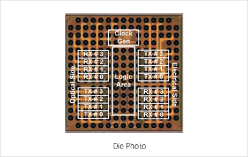
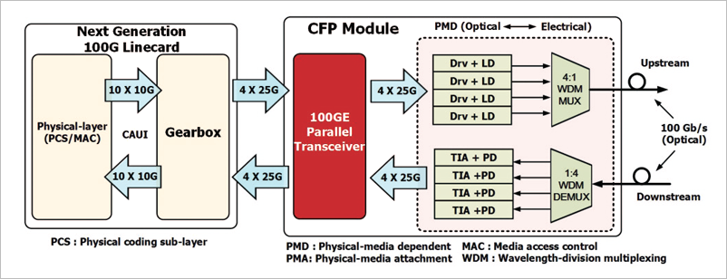
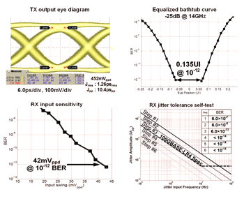
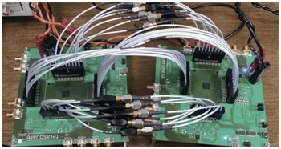

Report by Subjects
Report by Subjects
KAIST RESEARCH ACHIEVEMENTS
Low-power Next Generation 100gbps Ethernet Transceiver ic
(Department of Electrical Engineering) Hyeon-Min Bae
Summary
By 2020, Full HD/Ultra HD IPTV and mobile streaming services will become prevalent, and cloud services will be an indispensable part of our daily lives, necessitating the provision of high bandwidth in the base stations and data centers. Consequently, the ever-increasing energy consumption by the data centers will become one of the major global concerns that the data centers will be seeking to resolve by incorporating the proposed 'Ultra-low power 100Gbps ethernet transceiver IC. The use of the 100Gbps ethernet transceiver IC not only allows drastic cuts in the power consumption, but it also enables significant reduction in both the power maintenance costs and CO2 emission. The transition to the era of 100Gbps and 400Gbps took three to four years less than expected. Not only the internet- driven countries such as Korea and the U.S., but also the developing countries such as China and India are nearing the completion of establishing the 100Gbps infrastructure, wherein their phenomenal use of the internet is proportional to their sizable population. Furthermore, our lab has developed a prototype IC for the next-generation 1Tbps communications, ready to be launched for commercialization.
R&D Report

The data centers today are operating 24 hours a day to handle tens of millions of queries a day from all around the world. As of 2006, in the U.S., the annual use of power consumption by data centers comprises 1.5% (610kWh annually) of the total nation-wide power consumption. At this rate, by 2020, it is expected that the proportion will increase to 10%. Such huge energy power consumption by the data centers requires a counter measure, and the proposed 'Ultra-low power 100Gbps ethernet transceiver IC' is just that. Compared with the currently available competing products, its power consumption is reduced to 1/3 level and hence the IC can be integrated in miniscule modules such as CFP4/QSFP28. It is expected that the proposed IC will expedite the process of throughput increase in data centers by reducing power consumption and operating expenditure.
Features
ㆍCompliant with IEEE802.3ba 100GBASE-LR4/ER4 and OIF CEI-28G-VSR specification
ㆍ0.9V Core VDD, < 1W Power Consumption- CFP4 or QSFP+ Module Form Factor
ㆍ4 x Elec. RX/TX Lane, 4 x Opti. RX/TX Lane- 25.0Gbps ~ 28.3Gbps, BER < 10-15
ㆍReference-less & Master-less
ㆍ20dB @ 14GHz Channel Loss Compensation- PRBS Generator / Checker
ㆍLoopback, Lane Swapping
ㆍInternal Jitter Tolerance testing
ㆍ40nm CMOS, 2.7×2.7㎟
 Fig 2. Linecardi, CFP Module
 Fig 3. TX/RX Measurement Results
 Fig 4. Measurement Setup
Measurement Results & Conclusion
The IC is measured with 0.9V core VDD with a 28.0Gbps 231-1 pseudo random bit sequence. The measured bit-error-rate (BER) is under 10-15 while consuming only 870mW. The power efficiency is 3.9mW/Gb/s, which is the highest among all 100Gbps transceivers.
Expectation Effectiveness
The proposed design techniques can be easily applied to future process technologies for the implementation of next generation low power transceiver ICs for diverse applications including 1Tbps Ethernet, Displayport, USB, SATA and USB.
Research Funding
ㆍA domestic fabless semiconductor company, TeraSquare Inc. is plan to commercialize and mass-produce the IC from late 2014.
Research Results
ㆍPresidental Award in 14th Korea Semoconductor Design Contest Award in 2013
ㆍPatents Pending: six patent
ㆍ국내언론보도 16건